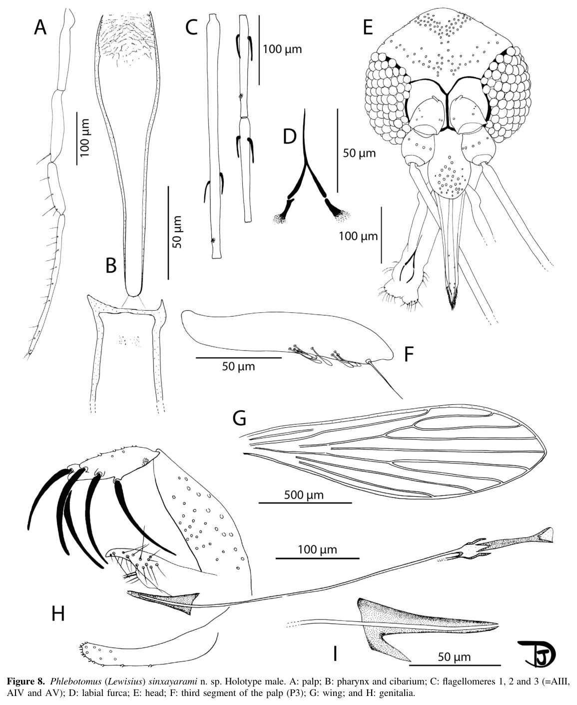

Species › Phlebotomus › Lewisius
Phlebotomus sinxayarami
| Classification | Genus Phlebotomus, subgenus Lewisius |
|---|---|
| Status | valid |
| Distribution | Laos (described from Laos in Vongphayloth et al. 2023, cited in Vongphayloth et al. 2024) | Laos: Luangnamtha, Luangphabang, Vientiane province (512 specimens) (Vongphayloth et al. 2026, Table 2) | Laos: type locality Pha Nok Kok cave (18°30′ N, 101°59′ E), Feung district, Vientiane province; sympatric with Ph. breyi (Vongphayloth et al. 2023, p. 12) |
| Importance | Blood meal of one engorged female identified as water buffalo (Bubalus bubalis); the authors infer that females leave the cave to feed (Vongphayloth et al. 2023, pp. 5, 19). |
| Diagnostic notes | ♀ pharyngeal armature not pigmented; p4 < 120 µm; terminal knob of spermatheca on a short, wide neck (Ph. breyi: p4 > 130 µm, long narrow neck). ♂ five gonostyle spines, simple paramere, aedeagal ducts < 500 µm (Vongphayloth et al. 2024 keys). Described in Vongphayloth et al. 2023 (Parasite 30: 21). One of two species described from Laos in a new subgenus in 2023 (Vongphayloth et al. 2023, cited in Vongphayloth et al. 2026). | Vongphayloth et al. 2023, differential diagnosis (Table 6, p. 19) against Ph. betisi and Ph. breyi: ♀ ascoid formula 2/f1-f13, 0/f14 (same in all three); antennal papillae on f1-f2 and f10-f14, absent on f3-f9 (Ph. betisi: f1-f2, f9-f14; Ph. breyi: f1-f2, f12-f14); f1 (AIII)/labrum > 1 (Ph. breyi < 1); palp segment 4 < 141 µm (80-110) (Ph. betisi 126-141; Ph. breyi 141-173); spermathecae 'about 12-13 clearly separated rings with short neck', individual ducts < 400 µm, no common duct (Ph. betisi: about 20 rings, long neck, < 400; Ph. breyi: about 14-15 rings, long neck, > 400). ♂ ascoid formula 2/f1-f9, 1/f10-f11, 0/f12-f14 (Ph. breyi the same; Ph. betisi 2/f1-f6, 1/f7-f12, 0/f13-f14); papillae on f1-f2, f10-f14; aedeagal ducts < 500 µm and aedeagal ducts/sperm pump < 4 (Ph. breyi > 500 µm, > 4). Measurements (Tables 4-5, pp. 17-18; min-max): ♀ p4 80.58-105.16 µm, p5 135.30-293.55 µm, f1/labrum 1.12-1.38 (Ph. breyi p4 141.01-172.48, p5 308.15-426.75; Ph. betisi p4 126.39-140.66, p5 393.31-452.85); ♂ aedeagal ducts 328.91-411.75 µm, AD/sperm pump 3.35-4.02, p4 66.40-93.46 µm, p5 182.64-272.04 µm (Ph. breyi 535.60-655.39, 5.03-6.25, 136.26-153.53; Ph. betisi 331-470, 2.74-3.92, 99-121). Both sexes: interocular suture complete (incomplete in Ph. betisi and Ph. breyi; very unusual in Phlebotomus) (p. 16); palps, especially p4 and p5, short (p. 16). Holotype ♂ (p. 15): gonostyle 105 µm with 5 thick spines (two terminal, two median and an intermediate one); simple paramere 140 µm; parameral sheath 100 µm, straight, rounded at top; aedeagal ducts 390 µm; sperm pump 98 µm. Paratype ♀ (p. 16): individual spermathecal ducts 160 µm, enlarged at their bases; spermathecae with 14 or 15 bead-like rings, terminal knob inserted in a wide neck; genital fork with short lateral apodemes. CAUTION: ♀ paratype p4 printed '923 µm' (p. 15; Table 4 range 80.58-105.16); ring counts in the descriptions are the reverse of Table 6; the Discussion (p. 16) calls its spermathecal ducts longer than those of Ph. breyi, contradicting the descriptions and Table 6 (see conflicts). |
| Sources | Vongphayloth et al. 2024, Vongphayloth et al. 2026, Vongphayloth et al. 2023 |
⚠ Conflicting characters
| Character | Source A | Source B | Type | Comment |
|---|---|---|---|---|
| Length of spermathecal ducts (♀) | Vongphayloth et al. 2023: Individual ducts 160 µm (p. 16) vs 450 µm in Ph. breyi (p. 12); results: shorter than in Ph. breyi (p. 5); Table 6: < 400 vs > 400 µm (p. 19) | Vongphayloth et al. 2023: Discussion (p. 16): 'The spermathecal ducts of Ph. sinxayarami are longer than those of Ph. breyi' | printing error | The Discussion sentence contradicts the rest of the paper; the taxa notes follow the descriptions and Table 6. |
| Length of palp segment 4 (♀ paratype) | Vongphayloth et al. 2023: printed 'p4 = 923 µm' (description of ♀ paratype NGS 356-29, p. 15) | Vongphayloth et al. 2023: Table 4 (p. 17): ♀ p4 80.58-105.16 µm (mean 92.03); palpal formula 1, 4, (2, 3), 5 makes p4 shorter than p2 (120 µm) | printing error | Probably about 92 µm, but the true value is not printed; not used in the data. |
How it keys out
The chain of characters leading to this taxon in each key (a ready-made diagnosis).
Laos karst (Vientiane): females (Vongphayloth et al. 2024) – couplet 5b
Laos karst (Vientiane): males (Vongphayloth et al. 2024) – couplet 5b
Figures

